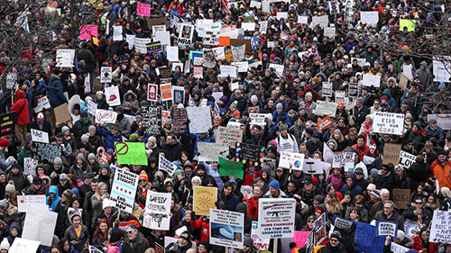

6 takeaways from the indictment of Russians for DNC hacking
The Justice Department's indictment of 12 Russian military intelligence agents on Friday was jaw-dropping in its scope and level of details into attempts to influence the 2016 US presidential election.
Friday's indictment shows the lengths the Russians allegedly went to in order to defeat Hillary Clinton, thereby aiding Donald Trump's campaign. Their actions throughout 2016 resulted in multiple criminal charges, from identity fraud to money laundering conspiracy.
To commit the alleged crimes, the Russians targeted more than 300 people affiliated with Clinton's campaign and Democratic political organizations, including the Clinton campaign chairman, John Podesta. Once inside the Democratic computers, they searched for keywords like "Hillary," (then-GOP candidate Ted) "Cruz," "Trump" and "Benghazi investigations" so they could steal the most damaging files. They wanted opposition research, campaign field operations and voter data, the indictment alleges.
At one point the hackers even wrote to an organization that appears to be Wikileaks to coordinate release of the stolen documents. The group, listed only as Organization 1, responded that they thought Trump had a slim, "no more than 25% chance" of winning against Clinton so they found that conflict between Democratic primary challenger Bernie Sanders and Clinton was more "interesting."
The Russian hackers' scheme to steal thousands of documents from the Democrats, as described in the indictment, used simple but effective tools to breach their targets many times and in multiple ways. From Twitter and Facebook to WordPress, the hackers used the online services most ingrained in American society for posts that spread their illicit information.
Even bitcoin, the electronic cash that's kept Silicon Valley abuzz, played a key role in the Russians' efforts to build their hacking infrastructure. "The use of bitcoin allowed the conspirators to avoid direct relationships with traditional financial institutions, allowing them to evade greater scrutiny of their identities and sources of funds," the indictment said.
The hacking tools included emails disguised as Google security alerts containing bogus links and malware deposited on servers. Some were even transferred to a computer the foreign intelligence group leased in Illinois. They stole passwords, tracked keystrokes, took screenshots and watched banking information, the indictment said.
Bank of England raises UK interest rates
The Bank of England has raised the interest rate for only the second time in a decade.
The rate has risen by a quarter of one percent, from 0.5% to 0.75% - the highest level since March 2009.
The move will increase the interest costs of more than three-and-a-half million residential mortgages that have variable or tracker rates.
But it will be welcomed by savers, who could see a lift in their interest rates over the coming months.
However, after the last rate rise in November, half of savings accounts did not move at all.
Why are they doing this now?
The Bank's Monetary Policy Committee had been expected to raise interest rates in May, but held fire because the economy went through a weak patch at the start of the year - partly because of the harsh weather conditions, dubbed the Beast from the East.
Led by governor Mark Carney, the Bank is now confident that the dip was temporary and that economic growth will recover from the 0.2% rate seen in the first quarter, to 0.4% in the second quarter and maintain that pace later in the year.
The Bank is sticking to previous guidance that there will be further interest rate rises, but Mr Carney said these will be "limited and gradual".
"Rates can be expected to rise gradually. Policy needs to walk, not run, to stand still," he said.
However, the Institute of Directors said the Bank had "jumped the gun" by raising the rate now.
It said: "The rise threatens to dampen consumer and business confidence at an already fragile time.
"Growth has remained subdued, and the recent partial rebound is the least that could be expected after the lack of progress in the year's first quarter."
Five interest rate facts
- More than 3.5 million residential mortgages are on a variable or tracker rate
- The average standard variable rate mortgage is 4.72%
- On a £150,000 variable mortgage, a rise to 0.75% is likely to increase the annual cost by £224
- A Bank rate rise does not guarantee the equivalent increase in interest paid to savers. Half did not move after the last rate rise
- No easy access savings account at a major High Street bank pays interest of more than 0.5%
The Bank said a pick-up in the economy is being supported by household spending, which the Bank said had been "erratic" earlier in the year.
It is also believes the recent series of store closures on the High Street does not reflect a lack of appetite for shopping.
In its Quarterly Inflation Report, the Bank said: "Although in the past year the number of retail closures have increased and retail footfall has fallen, contacts of the Bank's agents suggest that mainly reflects shifts in consumer demand to online stores and from goods to services."
It also seems unlikely the UK will return to interest rates of 5% and above. In its inflation report ,the Bank published what it thinks is the natural interest rate for the UK economy.
It puts that at between 2% and 3%.
That relatively low rate is partly due to an ageing population.
Older people tend to save more and in the future, that will provide a greater pool of savings for lending to households and industry and help prevent the economy from overheating.
US mid-terms: Can we tell now if Democrats will win?
Will they or won't they? With the mid-term congressional elections three months away, the biggest question is whether Democrats can win enough seats in Congress to wrest control of at least one of the two chambers and give Donald Trump a bloody nose.
That would have immediate and drastic implications for the president's ability to advance his political agenda and Democratic oversight of his administration.
The "mid-term wave" - a sweeping electoral triumph that reshapes the US national political layout field - is a recurring phenomenon in US politics.
But what is it, and when have they happened before?
"There's really no good definition," says Geoffrey Skelley of the University of Virginia Center for Politics.
"It's just broadly viewed as an election where one party does particularly well to the point where they flip control of a chamber of Congress and also win a sizable number of seats that the other party held."
For the purposes of this analysis, a mid-term wave is where one party picks up a combination of more than 20 seats in the US House of Representatives and the Senate.
That's happened eight times in the last 70 years, notably in 1994 (a Republican wave against Bill Clinton) and 2010 (one against Barack Obama).
Today, the Republican Party is near a modern-day high in seats in the House of Representatives, with a 241-to-194 seat majority, so it could be poised for a tumble.
The Senate terrain may be friendlier for Republicans, with Democrats defending 10 seats in states Mr Trump won in 2016, but this year's political atmosphere is such that an electoral storm could be brewing.
Brewing and actually crashing through are two different things, of course.
Is there evidence pointing to Democratic success? Here are the measurements that will give us clues.
Turkey threatens to retaliate over US sanctions in escalating dispute between Nato allies
Turkey was on Thursday drawing up retaliatory measures after Washington slapped sanctions on two Turkish ministers in the one of the biggest crises between the two NATO allies in recent years.
Tensions have soared over Turkey's detention on terror charges of American pastor Andrew Brunson, who was first held in October 2016 and was moved to house arrest last week.
The sanctions targeting Justice Minister Abdulhamit Gul and Interior Minister Suleyman Soylu freeze any property or assets on US soil held by the two ministers, and bar US citizens from doing business with them.
White House spokeswoman Sarah Sanders told journalists both ministers had "played leading roles in the arrest and detention of Pastor Brunson", who led a Protestant church in the Aegean city of Izmir.
The US Treasury implemented the sanctions under the 2016 Global Magnitsky Act named after Russian lawyer Sergei Magnitsky, who died in a Moscow jail, and which allows the US to sanction foreign officials implicated in rights abuses.
The Turkish foreign ministry warned that the move "will greatly damage constructive efforts" to solve outstanding issues and told Washington it would retaliate.
"Without delay, there will be a response to this aggressive attitude that will not serve any purpose," it said.
Foreign Minister Mevlut Cavusoglu, who is set to meet US Secretary of State Mike Pompeo in the next few days, also warned that the move "will not go without response".
Hours before the sanctions were announced, President Recep Tayyip Erdogan accused Washington of showing an "evangelist, Zionist mentality".
The standoff appears to be one of the most serious crises between Turkey and the United States in modern history, along with the rows over the 1974 Turkish invasion of Cyprus and the 2003 US-led invasion of Iraq.
Soldiers patrol the streets of Harare as Mnangagwa promises inquiry into election violence that left three dead in Zimbabwe

Zimbabwe's president Emmerson Mnangagwa has promised an independent inquiry into post election clashes in which three opposition protesters were killed.
Mr Mnangagwa, whose ruling Zanu PF party yesterday claimed a large majority in disputed parliamentary elections, said he had been in contact with the leader of the opposition MDC Alliance in a bid to defuse tensions.
"I am calling...for an independent inquiry into what occurred in Harare yesterday. We believe in transparency and accountability, and those responsible should be identified and brought to justice," he wrote on his official Twitter channel.
"We have been in communication with Nelson Chamisa to discuss how to immediately diffuse the situation, and we must maintain this dialogue in order to protect the peace we hold dear."
A spokesman for Mr Chamisa said he was not at liberty to confirm or deny whether such talks had taken place.
Troops backed by armoured vehicles opened fire on Wednesday to clear the capital's streets of demonstrators who accused Mnangagwa's ruling party of trying to rig Monday's presidential election.
Many shops were closed on Thursday morning and the pavements quiet. Several streets were still strewn with rocks and the charred remains of fires. Soldiers loitered at intersections.
"Yesterday was a very sad day for Zimbabwe," said minibus driver Gift, glancing over his shoulder as a soldier smoking a cigarette looked on.
"We hope things remain quiet and we can all just forget about this election. We don't know if it was fair. The government will do what they want."
The deployment of soldiers and their shooting and beating of unarmed protesters is likely to set back efforts to end Zimbabwe's pariah status in the wake of the army's removal of longtime leader Robert Mugabe in a coup last November.
Mnangagwa blamed the violence on the opposition Movement for Democratic Change, led by Nelson Chamisa, who announced on Twitter on Wednesday that he had "won the popular vote". Chamisa provided no details or concrete evidence of rigging.
Washington Republicans just keep losing primaries

On Thursday night, Tennessee Rep. Diane Black came nowhere near winning the state's GOP governor's nomination. Despite beginning the race as the front-runner, she finished 13 points behind the winner -- a wealthy businessman who ran as an outsider in the mold of, you guessed it, Donald Trump.
Black's convincing loss is simply the latest in a string of defeats for Washington, DC, Republicans seeking to win statewide office this year. She is the fifth sitting GOP member of the House to lose a statewide primary already in 2018, many of whom, like Black, began their races as the favorite only to be passed by a candidate running as an outsider to the Washington system.
In Indiana, for example, conventional wisdom was that either Reps. Luke Messer or Todd Rokita would be the party's nominee against endangered Democratic Sen. Joe Donnelly. But Mike Braun, a former state representative touting his business background and the fact that he hadn't spent a single day in Washington, was the winner. In one ad, Braun carried cardboard cutouts of Messer and Rokita and asked people to tell the two congressmen apart. In another, Braun insists:" Politics shouldn't be a career. We need folks with real world experience who get the job done and come back home ... I'm running because President Trump paved the way."
In West Virginia, state Attorney General Patrick Morrisey attacked Rep. Evan Jenkins as a "liberal career politician" and ran an ad in which a West Virginia mountain is shown crashing down on the US Capitol. "Let's not just change Washington ... Let's blow it up and reinvent it." Morrisey won the primary earlier this summer and will face Sen. Joe Manchin (D) in the fall.
The message being sent by Republican voters is clear: They want more Trumps, not fewer. The President was the leading edge of a movement fueled by anger and disappointment with Washington, not its conclusion. Even with him now in the most powerful political office in the country, Republicans remain unhappy with the sort of leadership they are getting out of Washington -- and are ready to penalize anyone with a "Rep." in front of their names.
Rubio to introduce bill allowing parents to use Social Security benefits for paid leave
Sen. Marco Rubio plans to introduce a bill today that would allow new parents to finance their paid leave by drawing from their Social Security benefits early.
The Florida Republican's bill -- Economic Security for New Parents Act -- would allow parents to use their future Social Security benefits to use for at least two months leave, which would then delay receiving their retirement benefits by three to six months when they retire.
According to a summary from Rubio's office, the bill will allow the benefits to be transferable between parents and eligible for stay-at-home parents.
"There's nothing we can do for our children that's better than allowing their parents to spend more time and be more involved in their lives, especially from their early days," Rubio said in an interview on CBS "This Morning" Thursday morning.
He said his proposal would give families more options to choose from in providing care for their children.
Missouri Republican Ann Wagner plans to introduce a companion bill in the House next month.
Rubio's bill is modeled after a policy paper from the conservative group Independent Women's Forum released in January.
Although President Donald Trump talked about paid family leave during the Republican primary, the policy "was not exactly part of the Republican lexicon when we arrived in DC in January 2017," Ivanka Trump said Thursday at an Axios conversation on workforce development at the Newseum.
The President's eldest daughter and senior adviser has been helming White House efforts on the policy, which she said "will take time."
Ivanka Trump spent the past year meeting with Republican lawmakers, and while she feels a shift has been made on Capitol Hill to thinking of paid family leave a bipartisan issue, there is still a long way to go and any eventual deal will require compromise.
Trump called Nebraska GOP Sen. Deb Fischer's tax credit to private sector employers offering a paid family leave benefit a "great first step," and said she was "looking forward" to reacting to Rubio's legislation, as well as forthcoming legislation from "several other senators."